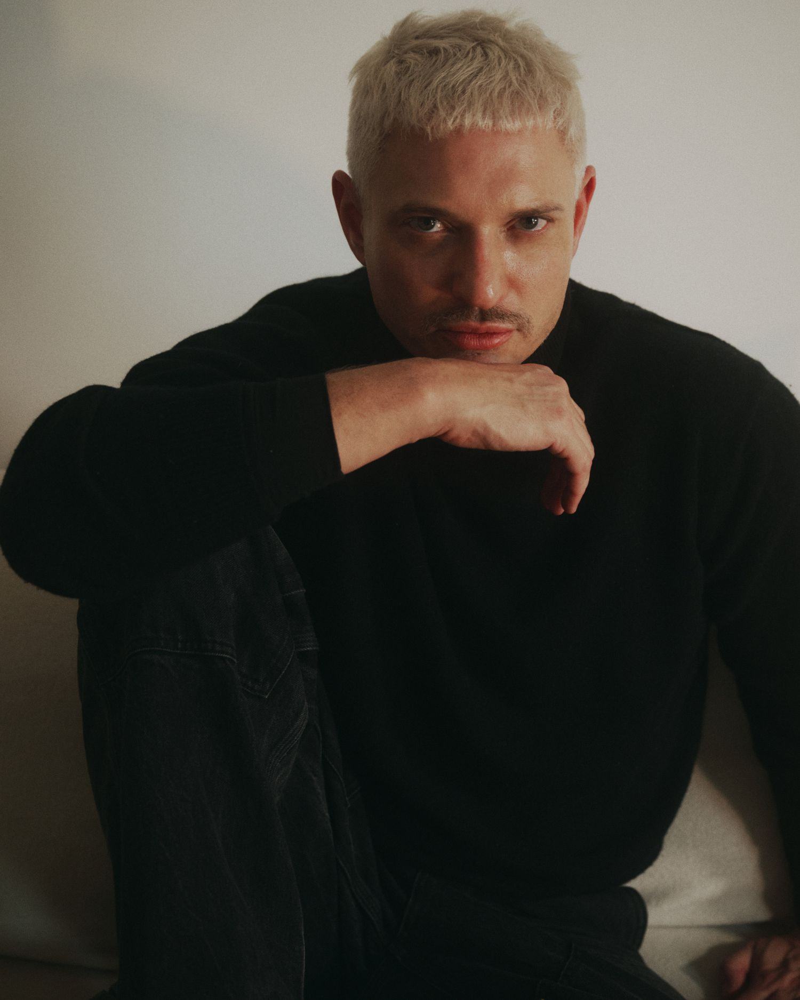

Só que o que eu entrego no fim não é tendência. É a clareza de saber o que só você pode dizer.
Pesquisador de tendências · Jornalista · Mentor
Passei vinte anos dentro do mercado de moda e cultura. Dez deles na WGSN, onde cheguei a diretor de tendências da América Latina. Passei pela Vogue, pela Business of Fashion, e criei o 3 Minutos de Moda. Sou mestre em design, arquitetura e urbanismo.
Só que o que mais me marcou nesses vinte anos não foi nenhum relatório que eu escrevi. Foi perceber que o que as pessoas mais me pediam não era informação. Era ajuda pra enxergar o que estava na frente delas o tempo todo, e que elas não conseguiam ver sozinhas.
Hoje é isso que eu faço. Trabalho com gente que precisa parar de repetir o que o mercado já está dizendo, e começar a dizer alguma coisa que seja dela.
Método JG é o nome do jeito como eu leio cultura. Não é uma fórmula que se aplica em cima de um briefing. É um olhar que se constrói, e que depois não desliga mais.
A leitura de tendência é o instrumento, não o destino. Ela serve pra chegar em outro lugar: entender qual é o seu lugar dentro do que está acontecendo agora, e o que só você pode dizer a partir dali.
Tendência é o caminho. Posicionamento é onde a gente chega.
Ele se apoia em quatro coisas: repertório, leitura de cultura, autenticidade e estratégia. Nenhuma funciona sozinha. Repertório sem autenticidade vira cópia bem feita. Autenticidade sem repertório vira opinião.
Vivemos uma recessão cultural. Nunca se produziu tanto, nunca se criou tão pouco. Todo mundo tem a mesma IA, lê o mesmo relatório e salva a mesma referência. O que ficou raro não é o acesso à informação. É a interpretação.
Será que o que te falta é mais informação? Ou será que é um jeito de olhar pra informação que já passa na sua frente todo dia?